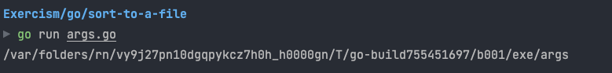
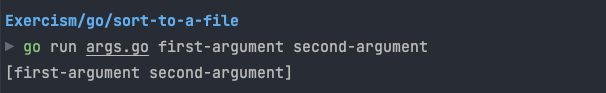

Golang punya package called as Args. Args adalah string berbentuk array berisi command line arguments.
Examples
The First Argument
Program name selalu menjadi argument pertama:
package main
import (
"fmt"
"os"
)
func main() {
// The first argument is always program name
myProgramName := os.Args[0]
// it will display the program name
fmt.Println(myProgramName)
}Output:
Get All Arguments
Mengambil semua arguments kecuali program name:
package main
import (
"fmt"
"os"
)
func main() {
allArgs := os.Args[1:]
fmt.Println(allArgs)
}Output:
Key Points
- os.Args[0] berisi nama program
- os.Args[1:] berisi semua arguments yang diberikan
- Arguments dipisahkan dengan spasi